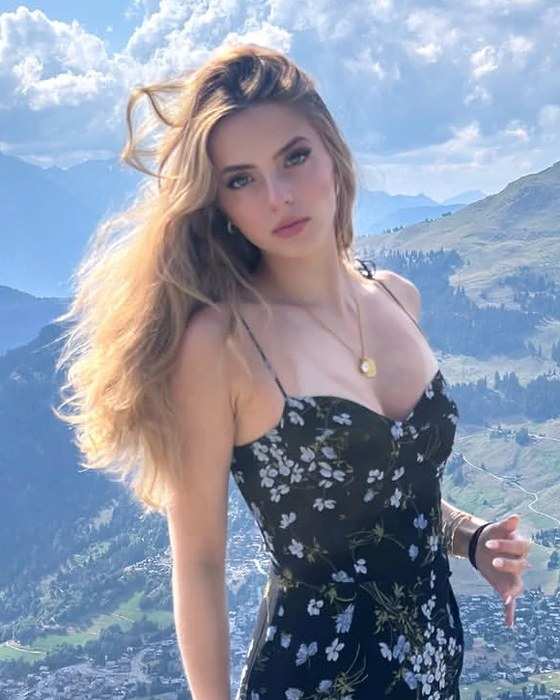

Ingressing Patterns of Life
Co-authored with Dr Michael Levin
On substrate-independent intelligence, morphogenesis and the boundaries of cognition.
Read the paper (PDF) ↗I study how minds arise, in neurons, in tissue and in machines, and how we keep increasingly autonomous AI systems aligned with what we actually want.

I’m a first-year at Stanford studying neuroscience and philosophy. My interests run across artificial intelligence, neuroscience, computational biology, philosophy of mind and alignment.
I do computational neuroscience research in Dr Michael Levin’s lab at Tufts and work on multi-agent alignment at Shiba AI. I follow the US–China AI race closely and I’m interested in global entrepreneurship. Outside the lab, I’m a big fan of Russian literature.
Before Stanford, I spent years in competitive debate and won both the Oxford and Cambridge international competitions.
Computational Neuroscience Researcher · with Dr Michael Levin · Boston, MA
Markov models of neuronal firing, used to study pattern formation and information flow in neural clusters.
Researcher, Multi-Agent Alignment & Safety · Japan / Remote
Multi-agent alignment and Constitutional AI: coordination, conflicting objectives, and how agentic systems fail.
Research Fellow · London
White papers on decentralised finance, digital assets and liberty.
Co-authored with Dr Michael Levin
On substrate-independent intelligence, morphogenesis and the boundaries of cognition.
Read the paper (PDF) ↗Selected as one of 11 top under-18 debaters in England. Winner of the Oxford and Cambridge international debating competitions, and the youngest winner of both, at 16.
I’m always glad to talk about neuroscience, alignment, philosophy of mind, or China.